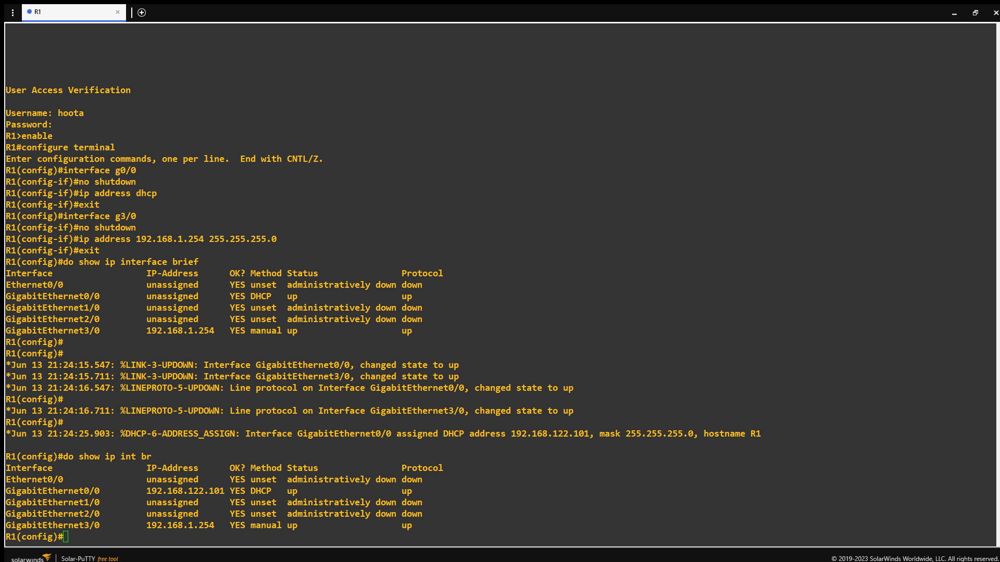
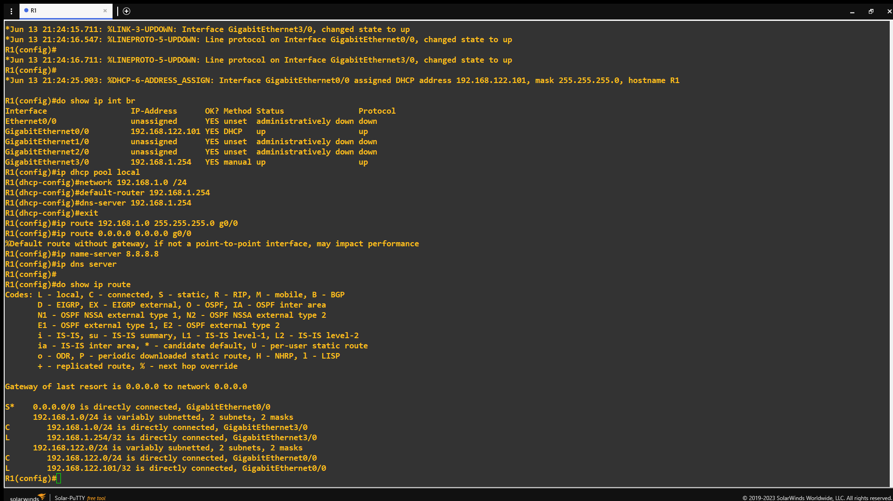
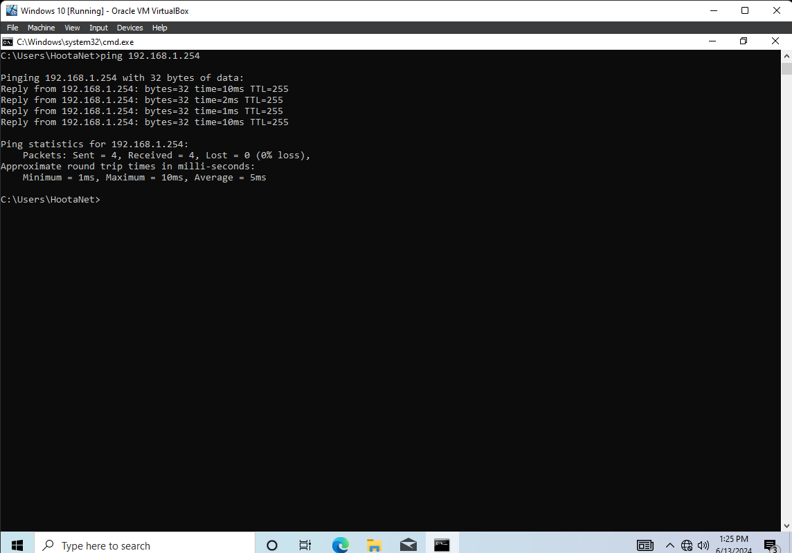
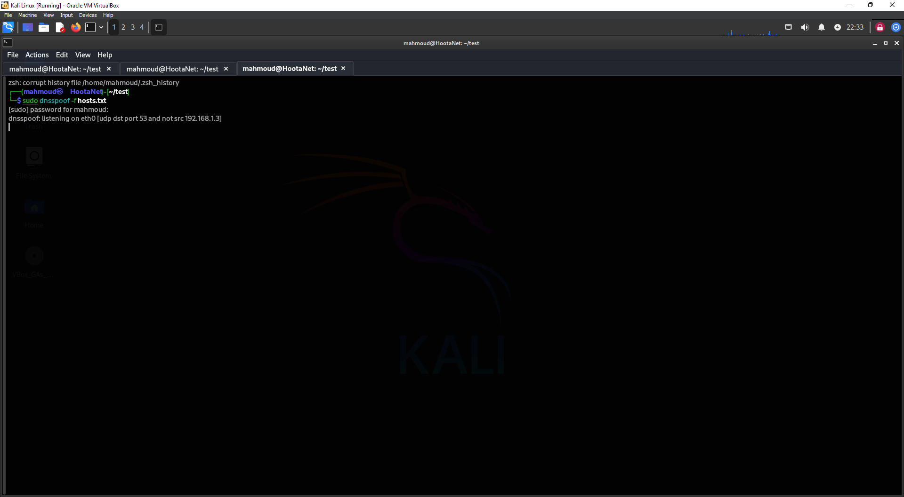

this is the plan :)
In this project I have two virtual machines that are running: Windows 10 and Kali
Linux, the Windows machine will be the victim and Kali Linux will be the attacker,
and he will launch the attack, and I created a topology inside GNS3 and added a
Cisco vIOS Router and configured it to act as a DHCP server and a DNS server which
should forward DNS queries to 8.8.8.8 google.com DNS server but the clients will
see that the gateway is the DNS server.
And then The virtual Machines will get their Addresses Information from the Router
which is the 192.168.1.0/24. And then the Kali Linux will intercept the DNS requests
from the Windows (victim) and reply to him with the IP of a Malicious web server
which the kali is hosting, it wouldn't be an actual malicious web server it just
going to be a page the is saying "You have been hacked", but just to demonestrate that
how such an attack can be performed.
If you need more explaination about the topics are covered in this
project go to this GUIDE you will find brief
explaination about all the topics in this Project.
Let's go through the Project showcase!

as you can see from the screenshoot I created the topology by adding a Cisco vIOS
Router and two clouds, The Internet cloud is basicly a NAT cloud which will share
my host OS network, and the other cloud is a cloud hosted in the GNS3 server on
VirutalBox and the GNS3 server is connected to an internal network in the 3rd interface.
The Internal network interface will let GNS3 server connect with the other Virtual machines when
They're connected to the internal network also.
from the topology on GNS3 you can see that the Router is connected to NAT interface
through g0/0, and it is connected to the VritualBox cloud through g3/0. So the configurations
are going to be just assigning IP addresses to the interfaces and setting the interfaces up
with the "no shutdown command", because the interfaces are down by default.
After assigning IP addresses to the interfaces I created a DHCP pool and added the network
192.168.1.0/24 and this will be the network that the virtual machines will connect to, and
then assigned the google's DNS server for the Router (NOT the clients) and the clients will
have the gateway (The Router) as the DNS server. That might be a security risk; but it
is practical to set the DNS server on the Router and then make the Router act as a DNS
server and that is useful when there is a little problem with the internet connection
the Router will save some Records and will resolve any DNS queries.
Note that the Virtual Machines will be connected together even without the Router
because VirtualBox internal network is acting as a switch which connectes the virtual machines
and the GNS3 server together. so the Router will only reply to DHCP discover and request messages
which are broadcasted in the network because the Router is acting as a DHCP server. and the clients
will send any message outside the 192.168.1.0/24 block to the router, in particular when
Windows try to browse google.com it will ask the Router for the address of google and then
will browse to google through the Router, but later we'll perform a Man-in-th-Middle attack
and we will reply to the DNS query message which will be asking for google address, and we will
reply with our web server that we are hosting.
now we copy the configurations from the text editor and paste them into the Router CLI as follows:


Now I just ran the virtual machines and set an internal network interface for each of them.
And now Let's see what IP addresses did they get:
As you can see Windows 10 got the IP address 192.168.1.2, and Kali Linux got the IP address 192.168.1.3. And below you can see Windows can ping the Router 192.168.1.254 succesfully, That means the network is up and running and the nodes are able to communicate.

We will host a web server which will show the index.html page, the page will say:
"You have been hacked", you could sratagize more strong attack, like banner graber or phishing
or any reconnaissance attack, even you can run malicious scripts associated with the web server;
but I just want to show that how easy it is to perform a MITM attack in unsecure network.
after creating the index.html text you host the page with the command:
Now the web server is hosted let's spoof DNS traffic on the network, first we need a
hosts file which will contain the names of some addresses, it suppose to have real names of the Addresses
but in our case we want to direct the victim into our web server, so we create the hosts file
and add 192.168.1.3 address to resolve victim's favorite websites names. we do that as follows:
After we set the hosts file we will spoof the DNS service using that hosts file we just created by issuing the dnsspoof command which will listen for all DNS query messages and replies to them with a malicious record.

Arp spoofing or "Arp Poisonning" is what will make the victim goes to our DNS listener asking for names
because we will poison the arp table by telling Windows:"hey Windows, 192.168.1.254 is not the Router,
It is actually me", and that is done by sending a gratiutous ARP message to the Windows with source
MAC Address of our Kali and IP address of 192.168.1.254, and that will make Windows go to Kali when ever who want
to go to the gateway.
Note that you have to enable ipv4 packet forwarding or Windows will not be able to communicate with the Router
and browse the Internet, because that will make Windows think that there is nothing going on and
every thing is normal. If you didn't enable ipv4 packet forwarding Windows will try to browse google and the
browser will say that the server is not found, and he will try again only after checking the network and restarting the interface
which we don't want to happen.
now the attack is performed and when ever the victim tries to browse google.com
he will visit our web page which we are hosting instead of going to the actual google web page.
I actually had issues doing this attack and that after trying to spoof the DNS, the
Cisco vIOS Router dectected me and stopped me from intercepting DNS messages, and the Router's
Syslog messages were displaying that there is a duplicate address, and the severity level was 4 which is
Warning.
So I was stuck there for a while and didn't perform the attack, I was frastrauted and impressed in the same time; because of
how Cisco devices are secure by default configuration, I didn't do any security configurations or mitigations.
So How the attack actually worked is that I restarted every thing but instead of having the Cisco vIOS Router serve the network,
I connected my home router to the virtual machines and changed the network from internal to bridged, So they
all act as actual nodes connected to the router through ethernet cable that is connected physicaly to the host machine.
and donig the attack was straightforward after changing the Router and the when the Windows actually browsed and
get redirected to our web server from the last screenshoot, that when I changed the Router.
Thanks for checking my first ever project which is made in 15/Jun/2024.
I'm Mahmoud Omar and I hope you all the best!.
@HootaNet